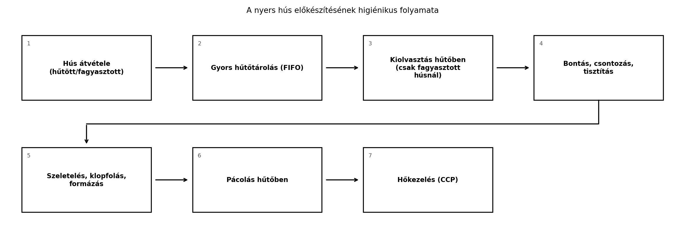

Reggel a tankonyha hűtőjéből kiveszed a csontos sertéskarajt, a marhalábszárat és egy kisebb darab színhúst vagdalékhoz. Az étlapon ma rántott karajszelet, pörkölt és fasírt szerepel. Ha a húst rosszul olvasztod ki, tompa késsel szálirányban szeleteled, vagy a darált húst sokáig melegen hagyod, nemcsak rágós, zsugorodott étel lesz a vége, hanem élelmiszerbiztonsági kockázatot is okozol. A hús előkészítése – felolvasztás, tisztítás, bontás, csontozás, szeletelés, formázás, pácolás – az a műveletsor, amely meghatározza a kész étel állagát, ízét és biztonságát. Ebben az alfejezetben megtanulod ezeket a lépéseket, és azt is, miért nem lehet a kényelem miatt szabálytalanul rövidíteni.
Képzeld el, hogy a séf reggel a hűtőből átveszi a csontos húsokat. A hús hideg, a felülete száraz, a színe élénk. A munkalapra fel van írva: „csontos karaj 5 kg, csontozott hús 4,2 kg, egy adag 180 g (régi receptben: 18 dkg; 1 dkg = 10 g)”. A szakács először éles késsel lefejti a csontot, eltávolítja a hártyát, majd a húst a rostokra merőlegesen felszeleteli. A szeletek egyenletes vastagságúak, nem vágottak át teljesen, és hidegen maradnak mindaddig, amíg a panírozás nem kezdődik. A daráláshoz a húst előhűti, a darálót tisztán, fertőtlenítve használja. A pácot a hűtőben érleli, nem a konyhapulton. Ez a kép mutatja a hús előkészítésének két fő szabályát: higiénia és precíz kéztechnika.
Higiénia. A nyers hús potenciálisan kórokozó baktériumokat hordozhat. Ezért minden nyers hússal végzett műveletnél külön vágódeszkát és külön kést használj, lehetőleg piros színjelzéssel. Eszközöket más élelmiszerhez ne használj, amíg alaposan el nem mosod és fertőtlenítetted. A húst mindig hűtve tárold, és csak a közvetlenül szükséges mennyiséget emeld ki a hűtőből. A veszélyes hőmérsékleti zóna – amelyben a baktériumok gyorsan szaporodnak – jellemzően +5 °C és +60 °C között van (ellenőrizendő: NÉBIH-útmutató, üzemi HACCP-terv). A hús előkészítésekor ezért a szobahőmérsékleten töltött időt a lehető legrövidebbre kell csökkenteni.
Definíció. A hús előkészítése az a konyhatechnológiai műveletsor, amelynek során a nyers húst felolvasztjuk, tisztítjuk, daraboljuk, csontozzuk, szeleteljük, formázzuk, és adott esetben pácoljuk vagy tűzdeljük, hogy a kívánt hőkezelési módhoz megfelelő alakú, méretű, állagú és ízű alapanyagot kapjunk.
Jogszabály. Az Európai Unió 852/2004/EK rendelete szerint a nyers húst minden más élelmiszertől elkülönítve kell tárolni és előkészíteni, hogy elkerüljük a keresztszennyeződést. A hús hőmérsékletét és a feldolgozás idejét a saját HACCP-tervben kell felügyelni (ellenőrizendő: hatályos szöveg és üzemi előírás).
A fagyasztott hús felolvasztása kritikus pont, mert a külső réteg gyorsan felmelegedhet, miközben a belső mag még fagyott. A legbiztonságosabb módszer a hűtőben történő lassú kiolvasztás.
Eljárás.
Ha gyorsabb kiolvasztás kell, használhatsz hideg vizes fürdőt: a húst vízhatlan zacskóban, folyamatosan hideg víz alatt vagy gyakran cserélt hideg vízben olvasztod. Mikrohullámú kiolvasztás csak akkor megengedett, ha a húst közvetlenül utána hőkezeled. Tilos a húst szobahőmérsékleten, konyhapulton vagy meleg vízben kiolvasztani, mert a külső réteg a veszélyes zónába kerül, a baktériumok elszaporodnak, és a hús belseje közben fagyott marad.
Kritikus pont. Felolvasztás során a hús legmelegebb része nem haladhatja meg a hűtött tárolás határát (tanulási érték: legfeljebb 5 °C, baromfinál 4 °C, darált húsnál 2 °C, az átvételi táblázat szerint); a felolvasztás módját, idejét és hőmérsékletét a HACCP-dokumentumban rögzíteni kell (ellenőrizendő: határértékek).
A húst általában nem kell folyó víz alatt mosni, mert a vízfröccsenés szétszórja a baktériumokat a konyhában. Ha a hús felületén csontszilánk vagy szennyeződés van, tiszta késsel vágd le vagy papírtörlővel töröld le; a nyers húst vízzel nem öblítjük. A baromfit sem szabad bő vízzel mosni; ha szükséges, papírtörlővel töröld át, és a papírt azonnal dobd ki.
Hártyázás. A hús felületén lévő ezüstös, fényes hártya (pl. marhahátszín, szűzpecsenye) rágós marad sütés közben, ezért el kell távolítani. A hártyát éles késsel, a felülettel párhuzamosan, feszesre húzva vágd le.
Inak eltávolítása. A nagy inak, különösen a marhalábszárban és lapockában, hosszú nedves hőkezelés nélkül rágósak. Az inakat késsel vágd ki, de a hosszú pároláshoz, pörkölthöz használt darabokból csak a legdurvább inakat távolítsd el, mert kollagénjük főzés közben zselatinná alakul, és sűríti, javítja a mártást.
A felesleges zsírt is le kell vágni, de annyit hagyj meg, amennyi az étel ízéhez, szaftosságához kell. A zsírt és a hulladékot külön gyűjtsd, ne keverd más hulladékkal.
Definíció. A húsbontás a nagyobb csontos húsdarabok szakszerű feldarabolása kisebb, az ételkészítéshez szükséges részekre. A csontozás a hús elválasztása a csonttól úgy, hogy a húst minél kevésbé vágjuk meg, a csontot pedig tisztán eltávolítjuk.
Alapelvek.
Példa: sertéskaraj csontozása.
Megjegyzés. A húsbontás és csontozás sok gyakorlást igényel. Kezdetben lassan dolgozz, és mindig a kés élét magadtól elfelé vezetve vágj. A vágási sérülések elkerülésére a kéztartás legyen „karmos” a vágandó húson.
A képsor a karaj vágott végét mutatja, a csont pontozott. A képek számozása a fenti példa lépéseivel egyezik: a kés előbb a gerinc tövisnyúlványa mentén halad a csontig (2.), majd a hegye a borda felületén csúszik végig, miközben a vezető kéz emeli a húst (3.); így a hús egy darabban, roncsolás nélkül válik le (4.). Az utolsó kép a hártyázást mutatja (lásd fent): a penge a felülettel párhuzamos, a hártya feszes. A HTML-kiadásban a lépések egyenként nagyíthatók, a csont rétege ki-be kapcsolható.
Szabály. A húst mindig a rostokra merőlegesen kell szeletelni. Így a rövid izomrostokat harapjuk el, a hús omlósabb, kevésbé rágós. Ha a rostokkal párhuzamosan szeletelünk, hosszú rostokat kapunk, amelyeket nehéz rágni, és a hús szívósnak tűnik.
Példa. A frissen sütött marhahátszínt vagy a sült császárszalonnát a sütés után, a pihentetést követően, vékonyan, a rostokra merőlegesen szeleteljük. A hajszálerek és az ínlemezek is így kevésbé érződnek.
Vastagság. A szeletvastagság az ételtől függ: - rántott hús, csirkemell: szeletelés kb. 1 cm, klopfolás után 0,7–0,8 cm (tanulási érték, ellenőrizendő: üzemi technológiai lap); - gyors sütésű természetes szelet: 1,5–2,5 cm; - vékony pácolt csíkok (pl. szűzpecsenye-csíkok): 0,3–0,5 cm.
Klopfolás. A húst kalapáccsal vagy húsklopfolóval, fólia között, óvatosan, egyenletes vastagságra ütögetjük. A klopfolás lazítja a kötőszövetet, egyenletes vastagságot ad, így a hús gyorsabban és egyenletesebben sül. Klopfoláskor a húst ne ütögessük szét, csak lapítsuk. A klopfolt húst azonnal hűtőbe kell tenni, ha nem panírozzuk azonnal.
Az (a) képen a rostok vízszintesen futnak: a merőleges vágás után a szeletben rövid rostvégek vannak, ezért a hús omlós; a párhuzamos vágás hosszú, rágós rostszálakat hagy. A (b) képen a szelet két fólia között, a klopfoló sima oldalával, középről kifelé lapul egyenletes vastagságúra (a munkalap szerint kb. 0,7–0,8 cm-re); a recés oldallal, fólia nélkül ütögetett szelet szétszakad. A HTML-kiadásban a vágásvonal szögét elforgathatod, és megnézheted, hogyan változik a szelet rostjainak hossza.
Bevagdalás. A nagyobb, egészben sütött húsok (pl. tarja, dagadó, csülök) bőrét vagy zsíros felületét sekélyen, kockás mintában bevágjuk. Ez megakadályozza, hogy a bőr sütés közben felhólyagosodjon vagy a hús összeugorjon, és a zsír egyenletesen süljön.
Darálás. A daráláshoz hideg, előhűtött húst használj, mert a meleg hús elkenődik, a zsír ráolvad a darálóra, és a baktériumok is gyorsabban szaporodnak. A daráló fém alkatrészeit (csiga, kés, tárcsa) használat előtt hűtőben vagy fagyasztóban hűtsd elő. Csak olyan húst darálj, amelyet közvetlenül utána feldolgozol és hőkezelsz. A daráló részeit, helyes összeszerelését és a tolófás adagolást a Konyhai gépek és berendezések alfejezet húsdaráló-ábrája mutatja: a húst csak tolófával nyomd az etetőcsőbe, szétszerelni csak leállított, leválasztott gépet szabad.
Biztonsági korlát. A húst csak tolófával nyomd az etetőcsőbe (garatba), kézzel soha. Szétszerelés, tisztítás és az elakadás megszüntetése csak kikapcsolt, áramtalanított (dugó kihúzva) gépen történhet; a kést vágásbiztos kesztyűvel fogd meg.
Higiénia. A daráló gépet minden használat után azonnal szét kell szerelni, és az alkatrészeket forró mosogatószeres vízzel elmosni, fertőtleníteni. A daráló belső részein maradt húsmaradék kiváló táptalaj a baktériumoknak. A darálóba kerülő csont, porc vagy idegen anyag a vágókést is tönkreteheti.
Vagdalt húsok. A vagdalt (darált) húsból készült ételek – fasírt, húspogácsa, töltött paprika, húsgombóc – élelmiszerbiztonsági szempontból kockázatosak, mert a darálás a hús felületén lévő baktériumokat a massza belsejébe is szétkeveri, és a nagy felület miatt gyorsan szaporodnak. Ezért a darált hús ételeinek a közepükön is el kell érniük a biztonságos maghőmérsékletet; a vagdalt húst azonnal fűszerezni, formázni és hőkezelni kell, hűtve tárolni, és a kész étel maghőmérsékletét ellenőrizni kell. A vagdalt ételek biztonságos maghőmérséklete legalább 75 °C (ellenőrizendő: NÉBIH-útmutató, HACCP-terv).
Formázás. A vagdalt masszát nedves kézzel formázzuk, hogy ne ragadjon. A fasírt, húspogácsa, gombóc alakja legyen egyenletes, tömör, de ne túl szoros, különben sütés közben megrepedhet. A formázott darabokat sütés előtt tartsuk hűtőben.
Kötözés. Az egészben sütött vagy párolt húsokat – pl. töltött dagadó, szűzpecsenye, csirkecomb – konyhai fonallal vagy hálóval formázzuk. A kötözés célja: a hús megtartsa a formáját, egyenletes vastagságú legyen, a töltelék ne folyjon ki, és a hőkezelés egyenletes legyen. A kötözéshez használj tiszta, el nem szakadó konyhai zsineget. A kötözés lépéseit gyakorolni kell.
Tűzdelés. A húst szalonnával, füstölt sonkával, fokhagymával, sárgarépával vagy petrezselyemgyökérrel tűzdeljük. A tűzdeléshez hosszú, vékony tűzdelő tűt használunk. A tűzdelt anyagot a hús rostjai közé, egyenletesen helyezzük el, hogy íz és zsiradék kerüljön a szárazabb hús belsejébe, és a hús szaftosabb maradjon.
A kötözésnél a hurkokat egyforma, 2–3 cm-es távolságra és egyforma feszességgel húzzuk rá, különben a rolád a szorosabb helyeken befűződik, és egyenetlenül sül. A tűzdelésnél a szalonnacsíkot a rostok irányában vezetjük be; a metszeten látszik, hogy a csíkok egyenletesen oszlanak el a húsban. A zsineget tálalás előtt eltávolítjuk. A HTML-kiadásban mindkét művelet lépésenként nézhető.
Bélelés. A bélelés során a húst vékony szalonna- vagy bacon-szeletekkel burkoljuk, vagy a formát béleljük ki szalonnával, mielőtt a masszát beletesszük (pl. pástétom, terrine). A bélelés megvédi a hús felületét a kiszáradástól, és extra zsiradékot, ízt ad.
Definíció. A pácolás (marinálás) olyan előkészítő eljárás, amelynek során a húst sóban, savban, olajban és fűszerben állni hagyjuk. Célja az ízesítés, a hús lazítása, a szín kialakítása, és egyes esetekben a hosszabb eltarthatóság elősegítése.
Száraz pácolás. A húst só és fűszerek keverékével bedörzsöljük, és hűtőben, lefedve vagy fóliában érleljük. A só kivonja a nedvességet, majd visszaoldódik, így a hús belsejét is ízesíti. Száraz páchoz gyakran használunk szárított fűszereket, cukrot, fokhagymaport. A száraz pácolás jellemző a grillezésre szánt húsoknál.
Nedves pácolás. A húst folyadékba (pl. olaj, citromlé, borecet, joghurt, szójaszósz) merítjük. A nedves pác lehet hideg vagy meleg, de a húst mindig hűtőben kell érlelni. A savas pác (citrom, ecet, bor, joghurt) lazítja a fehérjéket, de hosszú idő alatt a hús felületét szétmarja, krémes állagúvá teszi. Ezért a savas pácban töltött időt korlátozni kell: vékony szeletek esetén 30–60 perc, nagyobb daraboknál néhány óra (ellenőrizendő: receptúra és tapasztalat). Az olajos pác nedvességet zár be, a fűszerek pedig oldódnak benne.
Marinálás. A marinálás gyakorlatilag pácolást jelent; a szó az olajos-savas, fűszeres pácban való érlelést takarja. A marinádé lehet hideg vagy meleg, de a húst mindig hűtőben tartsuk alatta.
Higiénia. A pácban lévő nyers hús levet ereszt, amely baktériumokat tartalmazhat. A pácot soha ne öntsd a kész ételre, hacsak előtte fel nem forraltad. A pácolóedényt fedd le, és a hűtőben tartsd. A pácból kivett húst ne tedd vissza ugyanabba a pácba.
Allergén. A pácokban gyakori allergének: szójaszósz (szójabab, glutén), mustár, szezámmag, halmártás, tejtermék (joghurt, tejszín), tojás (egyes majonézes pácok). A vendéget tájékoztatni kell az ételben lévő allergénekről, és a konyhán kerülni kell az allergén pácok keresztszennyeződését.
Az alábbi táblázat a pácolási módokat foglalja össze.
| Pácolási mód | Fő összetevők | Jellemző idő | Alkalmas húsok |
|---|---|---|---|
| Száraz pácolás | só, cukor, szárított fűszerek | 1–12 óra, hűtőben | grillezett tarja, csirkecomb, marhasteak |
| Nedves pácolás olajos | olaj, fűszerek, zöldségek | 2–24 óra, hűtőben | egész sült húsok, szűzpecsenye |
| Savas marinálás | ecet, citrom, bor, joghurt, olaj | 30 perc – 4 óra | vékony szeletek, csíkok, nyársak |
| Enzimes pác | friss ananász, papaya, gyömbér | rövid, 30–60 perc | rostosabb, gyors sütésű húsok |
Megjegyzés. Az enzimes pácok (pl. friss ananász, papaya) nagyon erősen bontják a fehérjét, ezért csak rövid ideig használhatók, különben a hús szétesik.
A hús előkészítésének teljes folyamatát az alábbi ábra mutatja.

A hús előkészítésekor mindig veszteséggel számolunk. A csontozás, hártyázás, inak és zsír eltávolítása csökkenti a felhasználható hús tömegét.
Számítás. Egy tankonyhába 5,000 kg csontos sertéskaraj érkezik. A csontozás, hártyázás és tisztítás után 4,250 kg tiszta, csont nélküli hús marad.
Adott: - bruttó tömeg - nettó tömeg
Keresett: - veszteségszázalék - egy adag nyers hús , hány adag készíthető?
Képlet:
Behelyettesítés:
Az adagszám:
Ellenőrzés: 23 egész adag készíthető, mert a maradék 0,110 kg nem elegendő egy teljes adaghoz. A 15% veszteség reális sertéskaraj csontozásánál (ellenőrizendő: üzemi anyaghányad-táblázat).
Cél: A tanuló gyakorolja be a csontos sertéskaraj csontozását, a hús tisztítását, rostra merőleges szeletelését, klopfolását és egy hideg, fűszeres pácban való érlelését. A művelet során tartsa be a hús-higiéniai előírásokat.
Eszközök és anyagok:
Biztonsági korlát. Ezt a műveletet tankonyhán vagy oktatói felügyelettel gyakorold. A késekkel mindig magadtól elfelé vágj; a vágódeszka stabil legyen. A nyers hússal való munka után azonnal moss kezet.
Higiéniai előkészület:
Lépések:
Ellenőrzési pontok:
Dokumentálás: A gyakorlat során rögzítsd a hús bruttó tömegét, a csontozási veszteséget, a pác összetételét, a hűtő hőmérsékletét és a felhasználás időpontját a HACCP-munkalapon.
A hús előkészítésének minőségi követelményei:
| Tulajdonság | Követelmény |
|---|---|
| Szín | A hús friss, élénk színű, a fajra jellemző; nincs szürkés vagy zöldes elszíneződés |
| Szag | Kellemes, enyhén húsos; nincs savanyú, romlott, idegen szag |
| Tapintás | Hűtött, rugalmas, nem nyálkás, a felülete száraz vagy enyhén nedves |
| Szelet vastagság | Egyenletes, az ételre jellemző, pl. rántott karaj klopfolás után 0,7–0,8 cm |
| Alak | A formázott húsok (fasírt, pogácsa) egyenletesek, nem repedezettek |
| Hőmérséklet | Feldolgozás közben 0–5 °C, a hűtött tárolás határa alatt (ellenőrizendő) |
| Pác | A hús teljesen bevonva, a pác íze harmonikus, nem túl savas |
Kritikus pont. A nyers hús és a kész étel közötti keresztszennyeződés megelőzése a legfontosabb. A nyers hús leve soha ne érintkezzen zöldséggel, főtt étellel, tálaló eszközzel.
Hiba 1: A hús szobahőmérsékleten való kiolvasztása.
Hiba 2: Tompa késsel, a rostiránnyal párhuzamosan szeletelt hús.
Hiba 3: A pácolt húst túl sokáig hagyják savas pácban.
Hiba 4: A darált húst hosszú ideig szobahőmérsékleten formázzák, mielőtt hűtőbe tennék vagy hőkezelnék.
Egy kis étterem konyháján a szakács a fagyasztott csirkemellet este kivette a fagyasztóból, és a konyhapulton hagyta, hogy reggelre kiolvadjon. Reggel a hús külső része langyos volt, de a belseje még félig fagyott. A szakács a csirkét felszeletelte, és rántott csirkemellet készített belőle. Délután több vendég hasfájásra és hányásra panaszkodott. A hatósági vizsgálat feltárta, hogy a csirke a szobahőmérsékleten a veszélyes zónában állt, és a hőkezelés ellenére a kórokozók toxint termeltek. A tanulság: a húst soha ne olvaszd ki szobahőmérsékleten; a kiolvasztás módja és ideje kritikus pont, amelyet dokumentálni kell.
1. feladat (A) Nevezd meg a hús felolvasztásának három biztonságos módját, és mondd el, miért nem szabad a konyhapulton kiolvasztani.
2. feladat (A) Számítsd ki a veszteséget: 6,0 kg csontos sertéslapockát csontozol, a tiszta hús 4,5 kg lesz. Mennyi a veszteség százalékban? Mennyi adag hús készíthető, ha egy adag 0,15 kg?
3. feladat (B) Egészítsd ki a mondatot: A húst a ………. kell szeletelni, mert így a ………. rövidek lesznek, és a hús ………. lesz.
4. feladat (B) Magyarázd el, miért kell a darált húst azonnal hűtőbe tenni, ha nem sütjük meg azonnal.
5. feladat (C) Egy rendezvényre 24 adag rántott sertésszeletet kell előkészíteni. Egy adag nettó nyers hús 0,18 kg. A csontozás és tisztítás vesztesége 15%. Hány kg csontos sertéskarajt kell beszerezni?
6. feladat (D) Hibaelemzés: A vendég panasza szerint a természetes sertésszelet rágós, és sütés közben összeugrott. A konyhán a séf azt mondja, hogy a húst a rostokkal párhuzamosan szeletelték, és nem klopfolták. Mi lehet a hiba, és hogyan kellene helyesen előkészíteni a húst?
1. feladat (A) Biztonságos módok: hűtőben, hideg vizes fürdőben, mikrohullámú kiolvasztás (utóbbinál azonnali hőkezelés). A konyhapulton azért nem szabad, mert a hús külső része hamar a veszélyes zónába kerül, a baktériumok szaporodnak, és a belső rész fagyott marad.
2. feladat (A) Veszteség = (6,0 − 4,5) / 6,0 · 100 = 1,5 / 6,0 · 100 = 25%. Adagszám = 4,5 kg / 0,15 kg/adag = 30 adag.
3. feladat (B) A húst a rostokra merőlegesen kell szeletelni, mert így a rövid izomrostok lesznek, és a hús omlósabb/kevésbé rágós lesz.
4. feladat (B) A darálás a hús felületén lévő baktériumokat a massza belsejébe is szétkeveri, és a felület megnő, ezért a baktériumok könnyen szaporodnak; a darált húst a közepén is át kell sütni. Ha a darált húst nem hűtjük azonnal, a veszélyes hőmérsékleti zónában gyorsan elszaporodnak a kórokozók, és ételmérgezést okozhatnak.
5. feladat (C) Először a 24 adag nettó szükséglet: 24 · 0,18 kg = 4,32 kg. Ha a veszteség 15%, akkor a nettó a bruttó 85%-a. Bruttó = 4,32 / 0,85 = 5,08 kg. Tehát legalább 5,1 kg csontos sertéskarajt kell beszerezni.
6. feladat (D) A hiba a rostiránnyal párhuzamos szeletelés és a klopfolás elmaradása. A rostokkal párhuzamosan a hosszú izomrostok rágósak maradnak, a klopfolás hiánya miatt a hús vastag és egyenetlen, sütés közben a kötőszövet zsugorodik, és a hús összeugrik. Helyes eljárás: a húst a rostokra merőlegesen, egyenletes vastagságra szeletelni, fólia között óvatosan kiklopfolni, majd hűtve tárolni és sütni.
A hús előkészítése a biztonságos és jó minőségű húsételek alapja. A fagyasztott húst mindig hűtőben, hideg vízben vagy mikrohullámmal, azonnali hőkezelés mellett olvaszd ki; szobahőmérsékleten tilos. A nyers hús kezelése során kerüld a keresztszennyeződést: külön piros vágódeszka, külön kés, azonnali kézmosás. A húst bontás után csontozd, távolítsd el a hártyákat, inakat és felesleges zsírt. Szeleteld mindig rostra merőlegesen, és klopfold, ha szükséges. A darált húst azonnal formázd, hűtsd vagy hőkezeld, mert fokozottan romlékony. A pácolás lehet száraz, nedves vagy savas marinálás; a pácban lévő húst hűtőben tartsd, a fel nem használt pácot ne öntsd a kész ételre. A veszteséget a képlettel számold. A húsbontás és szeletelés szabályait használjuk a baromfi-, vad- és halfélék előkészítésénél (Baromfi, vad és hal előkészítése), a meleg előételeknél (Húsból és belsőségből készülő meleg előételek) és a vágóállatok ételeinél (Marhahús egészben és frissen sütve). A hús előkészítése mindig a HACCP-terv szerinti hőmérséklet-ellenőrzéssel történjen.
A fejezet a klasszikus magyar konyhatechnológiai és hentesipari ismereteket foglalja össze. A hús-higiéniai előírásokat az Európai Unió 852/2004/EK rendelete és a NÉBIH útmutatói tartalmazzák; a pontos hőmérsékleti határok, tárolási idők és veszteségszázalékok a hatályos szabályozás és az üzemi HACCP-terv szerint ellenőrizendők. A maghőmérsékleti értékek (pl. darált húsoknál 75 °C) tanulási értékek, az üzemi technológiai lap és a NÉBIH-útmutató a mérvadó (ellenőrizendő: konkrét értékek). Az anyaghányad-számításoknál a csontozási veszteségek üzemenként és húsrészenként eltérhetnek, ezért az üzemi anyaghányad-gyűjteményt kell használni. Az allergén jelölésnél az 1169/2011/EU rendelet II. mellékletének aktuális szövege az irányadó. A fenti hőmérsékleti, idő- és veszteségadatok jelölten tanulási értékek.